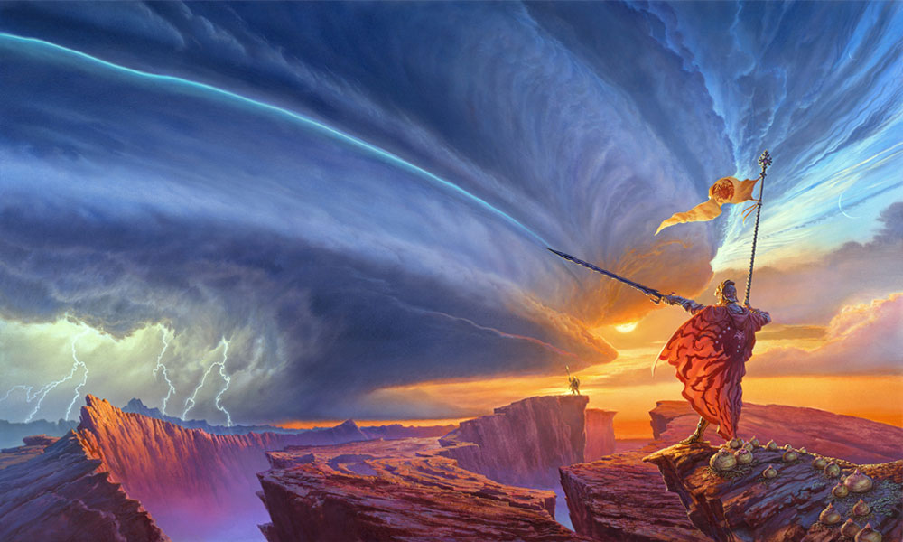

The Stormlight Archive:
a fan site
Welcome to Roshar and the Stormlight Archive! I am a huge fan of this series and would like to share why I love this world so much. Here I have only 2 parts of a massive world to share with you. The magic system and how parts of it work and the flora and fauna and the general world of Roshar. I hope you enjoy your walk through Roshar with me.